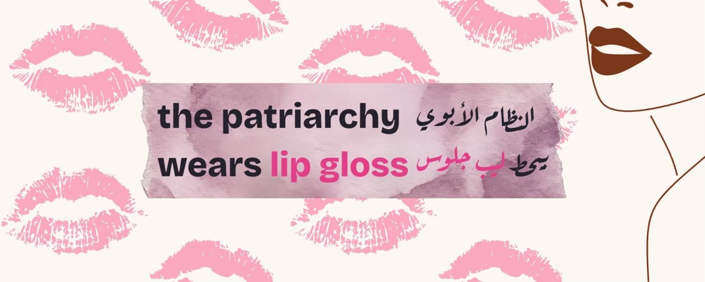
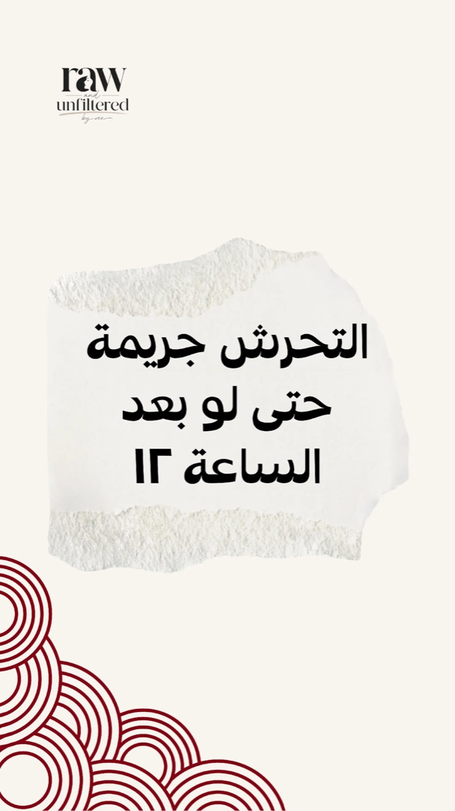

حاسه بديهيات بس معلش
التحرش جريمة حتى لو بعد الساعة ١٢. يوم الخميس مش مبرر، ولا لو مراتك مش باسطاك ده مبرر.
عن النسوية، والمجتمع، والسلطة، وكل اللي اتعودنا نسكت عنه. هنا بنفتح الكلام، ونفكّك المسلّمات.
اقرئي اللي مش بيتقال ↖
من الكحل في مصر القديمة لحد إعلانات أحمر الشفايف. إزاي التاريخ والتسويق رسموا حدود «المكياج الحريمي»؟
اقرئي المقال ↖
التحرش جريمة حتى لو بعد الساعة ١٢. يوم الخميس مش مبرر، ولا لو مراتك مش باسطاك ده مبرر.

التحرش ملوش علاقة باللبس. تحت العباية حكاية.

«حريتي حقي». التصميم بيربط الحرية بالاستقلال، وبيطرح الاتنين كحق للست.
من غير إذن مساحة للتساؤل، والنقد، ومواجهة الأفكار اللي اتورثت من غير ما حد يناقشها.
اعرفي إحنا مين ↖نشرة «من غير إذن» عن النسوية والثقافة والأسئلة اللي اتعودنا نعدّيها.
اكتبي، اسألي، واقترحي موضوع. المساحة دي مش لصوت واحد.
On feminism, society, power and the things we have been taught to stay quiet about.
Explore the features ↗From kohl in ancient Egypt to modern lipstick ads, how did history and marketing make makeup a marker of femininity?
Read the feature ↗Harassment is a crime even after midnight. Thursday is no excuse. Neither is being unhappy with your wife.
Harassment has nothing to do with clothes. There’s a story beneath the abaya.
“My freedom is my right.” The artwork connects freedom with independence and asserts both as a woman’s right.
Without Permission is a space to question inherited ideas, challenge norms and bring feminist perspectives to the foreground.
Read our manifesto ↗The Without Permission newsletter on feminism, culture, and the questions we’re taught to let slide.
Write, question or pitch a subject. There is room for more voices.